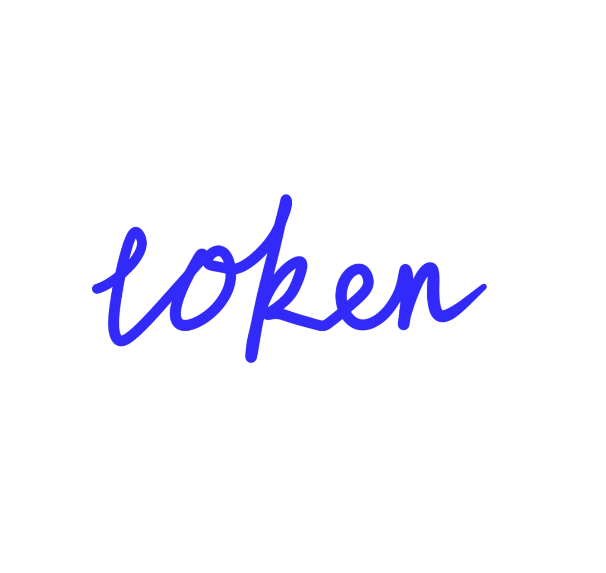
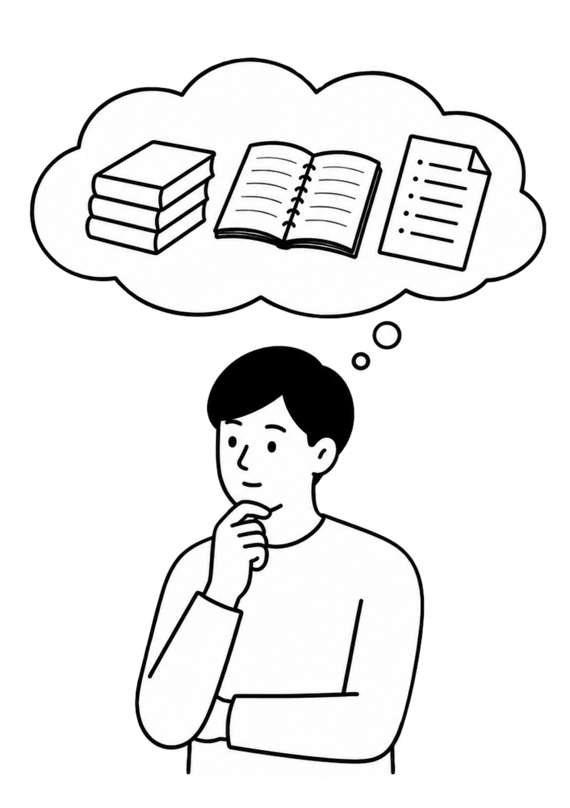

150万
汉字
仅限纯中文文本
相当于约10本 大学教材的 内容量
你需要一个学习管家。
点击千问查看你的学习管家

点击卡片查看换算说明
仅限纯中文文本
相当于约10本 大学教材的 内容量
每部约15万字 可完整阅读 长篇小说
约300场 20分钟 演讲内容
含注释与逻辑结构
约10个 中型项目的 代码量
对一个大学生而言， 这意味着什么？
点击每一项任务，为大学生活充能！

90分钟课堂录音转写稿
按一门课16周×每周3小时录音，100万Token可转写约6门课内容。实际消耗受语速、停顿影响。再也不用对着录音手动记笔记了！千问帮我转写了上百节课堂录音，一门课16周的内容轻松搞定~
点击卡片，看看千问怎么帮你省下手动整理时间
把一整个学期，压缩成一张知识地图。
谁做PPT？
方向改了！
Final3是最终版！
问卷数据还没清洗。
成果汇报讲稿
按每份汇报20页PPT+配套讲稿，每页150-250字估算。千问帮我搞定了所有成果汇报讲稿，20页PPT配套内容一键配齐，效率直接起飞！
点击卡片，看看小组汇报怎么一键提速
队友可能掉线，但思路永远在线。
你是否也焦头烂额？
≈ 300篇课程论文（5000字/篇）
≈ 300份访谈转写稿（30分钟/份）
≈ 10个课程代码项目（3000行/项目）
在洪流中，挖出一条通往答案的隧道。
点击任务，勾掉已经搞定的毕业待办
开题报告、答辩讲稿、导师批注、模拟问答、作品集材料和面试稿，最后都指向同一件事：毕业前，怎么把自己做过的事讲清楚。
内容讲清楚了，下一步，让它被看见。
答辩不是只有讲稿，作品集也不只是文件夹。当千问帮你理清方向，万相可以继续把它生成封面、主视觉、分镜和短片。
Qwen-Image 新人免费：各100张
qwen-image-2.0：0.2元/张
qwen-image-2.0-pro：0.5元/张
万相文生视频 / 图生视频新人免费：50秒
720P：0.6元/秒
1080P：1元/秒
100张图可以试出答辩 PPT 封面、作品集主视觉、项目概念图。50秒视频可以做5条10秒项目展示短片，或1条完整毕业项目概念片。
图像生成按成功生成的图片张数计费，视频生成按成功生成的视频秒数计费；具体免费额度、价格与有效期以阿里云百炼官方页面为准。100万个 Token 不是无脑丢资料，而是用“AI管理思维”精准提问，掌控节奏。
把重复文件和无关信息先清掉。
让 AI 先知道材料属于哪一类。
把 Token 用在关键章节和关键问题上。
剔除重复PPT、冗余草稿、无关聊天记录。
按「课件/文献/代码/项目」分类上传。
让千问生成全局目录、摘要和问题清单。
针对核心章节、关键论证、代码Bug精准追问。
每一问，都算数。
大一复习、大二竞赛、大三科研、大四答辩，每个阶段的难题，千问帮你。
100万Token吃透全周期资料。
Qwen-Image/万相生成视觉与视频。
Token管理台助你高效、合规使用AI。
从工具使用者进化为AI任务管理者。
千问大模型：
每一问，都算数。